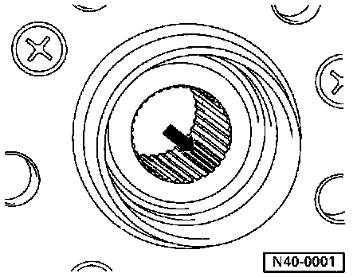

Wheel Hub: Application and ID

The wheel hub splines have been changed for vehicles with Plus suspension. The peaks of the splines have been compressed slightly, so there is no longer any backlash between the splines of the outer CV joint and the hub.
The modification to the splines requires a new method of tightening the 12-point axle nut, and removing and installing the drive axle is no longer possible without pressing tools.
In the future, only the wheel hubs with compressed splines will be supplied as replacement parts. With the new hub, locking fluid is no longer necessary.
The work sequence for removing and installing the drive axle has been revised. Service and Repair